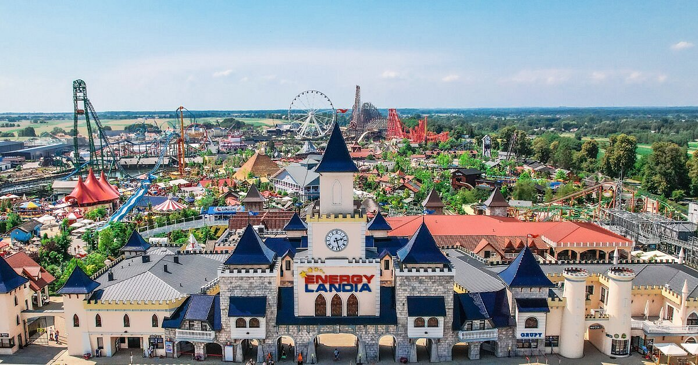
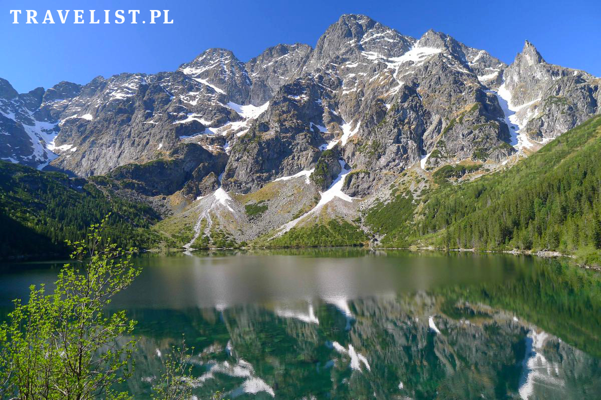

CITY BREAK 
ATTRACTIONS 
NATURE
Poland, officially the Republic of Poland, is a country in Central Europe. It is divided into 16 administrative provinces called voivodeships, covering an area of 313,931 km2 (121,209 sq mi). Poland has a population of over 38 million and is the fifth-most populous member state of the European Union. Warsaw is the nation's capital and largest metropolis. Poland has a temperate transitional climate and its territory traverses the Central European Plain, extending from Baltic Sea in the north to Sudeten and Carpathian Mountains in the south. The longest Polish river is the Vistula, and Poland's highest point is Mount Rysy, situated in the Tatra mountain range of the Carpathians. The country is bordered by Lithuania and Russia to the northeast, Belarus and Ukraine to the east, Slovakia and the Czech Republic to the south, and Germany to the west.